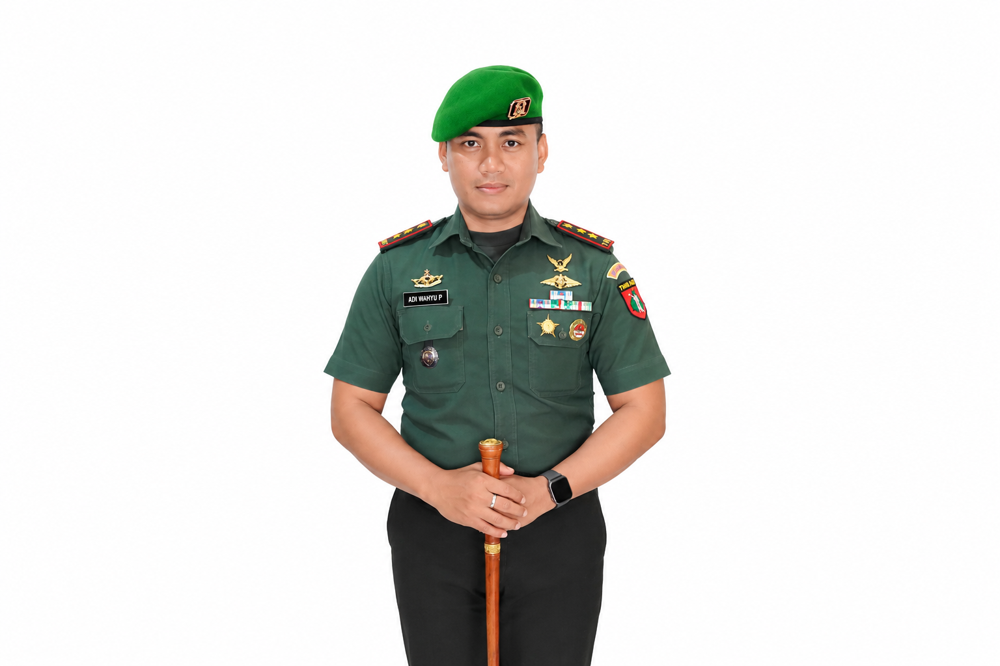

KOMANDO DAERAH MILITER XXII/TAMBUN BUNGAI
|
KOMLEKDAM XXII/TAMBUN BUNGAI
WITA --:--:--

Balakaju Kodam di Wilayah Korem 101 Banjarmasin
Cepat, Tepat, Rahasia / Aman — Urat nadi komando dan pengendalian yang andal dalam mendukung tugas pokok Korem 101 di seluruh wilayah Kalimantan Selatan.
Makorem 101 Banjarmasin

Komandan Detasemen Komunikasi dan Elektronika Korem 101 Banjarmasin
Puji syukur kita panjatkan ke hadirat Tuhan Yang Maha Esa, karena atas rahmat dan karunia-Nya, website resmi Detasemen Komunikasi dan Elektronika Korem 101 Banjarmasin (Denkomlekrem 101 Bjm) dapat hadir sebagai sarana informasi, transparansi, dan edukasi publik mengenai peran strategis Korps Komunikasi dan Elektronika TNI Angkatan Darat.
Di era peperangan modern dan transformasi digital yang bergerak sangat cepat, keunggulan informasi dan keandalan sistem komando pengendalian menjadi faktor penentu keberhasilan setiap tugas operasi maupun pembinaan teritorial. Berlandaskan semboyan "Cighra Apta Nirbhaya" (Cepat, Tepat, Rahasia/Aman), seluruh prajurit Denkomlekrem 101 senantiasa siap menggelar dukungan komunikasi taktis, satelit, elektronika, hingga pengamanan siber di seluruh penjuru Bumi Lambung Mangkurat, Kalimantan Selatan.
Semoga kehadiran media digital ini semakin mempererat kemanunggalan TNI dengan rakyat serta menjadi jembatan sinergi dengan seluruh instansi pemerintah daerah dan pemangku kepentingan di Kalimantan Selatan.
Berawal dari satuan pelayanan komunikasi radio HF/VHF di lingkungan Korem 101 yang bertugas menjamin kelancaran berita sandi dan hubungan komando antar Kodim di wilayah Kalimantan Selatan.
Validasi organisasi meningkatkan kapasitas menjadi Detasemen Perhubungan Korem (Denhubrem) 101 dengan kemampuan pemeliharaan alat komunikasi, dukungan protokoler VVIP, serta komunikasi tanggap darurat bencana.
Sejalan dengan validasi Korps Perhubungan menjadi Komunikasi dan Elektronika Angkatan Darat (Komlekad), satuan bertransformasi menjadi Denkomlekrem 101 Banjarmasin yang mengintegrasikan sistem satelit, teknologi informasi, peperangan elektronika (Pernika), dan pertahanan siber taktis.
"Komlekad Profesional dan Inovatif untuk Indonesia Berdaulat, Adil dan Makmur"
Klik kategori di bawah untuk meninjau kemampuan teknis, perangkat komunikasi lapangan, dan kesiapan operasional Denkomlekrem 101 Banjarmasin.
Pengajuan permohonan dukungan komunikasi, pengaduan masyarakat, atau koordinasi lintas instansi di wilayah Korem 101 Banjarmasin.
Terkoneksi langsung dengan Piket Staf Operasi & Jaring Denkomlekrem 101
Jl. Sutoyo S No. 404, Pelambuan, Kecamatan Banjarmasin Barat, Kota Banjarmasin, Kalimantan Selatan 70118